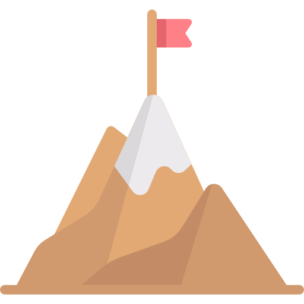

I'm Anirudh!
A programmer.



I am a CSE Sophomore, Web Developer and an avid tech enthusiast.

I learnt to code when I was 15 when it all started with a (healthy?) competition. I wanted to beat my cousin was all. I soon became enthusiatic about the field and have now gained a wealth of programming skills in the areas of HTML, CSS and development.

What started as a fun hobby of mine, trying to make videos of all the apps on my mom's phone, 6 years back, is now a channel which has amassed over 25,000 views. I talk about phones, laptops and everything that is in relation to consumer tech in my YouTube channel.